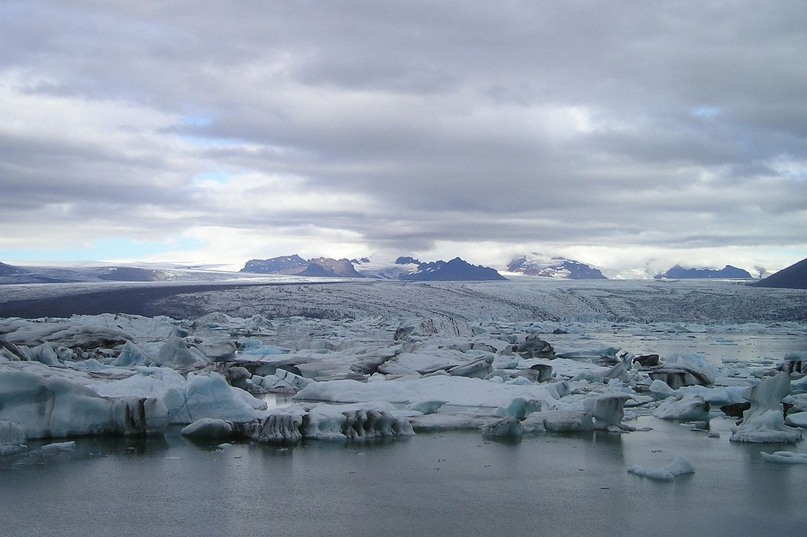

Penjelasan Umum
Bioma tundra berada di wilayah kutub bumi dan daerah pegunungan tinggi yang sangat dingin. Tanah di wilayah ini sebagian besar membeku sepanjang tahun sehingga tumbuhan sulit tumbuh tinggi. Tundra memiliki musim dingin yang sangat panjang dan musim panas yang singkat. Wilayah tundra biasanya tertutup salju hampir sepanjang tahun. Bioma ini menjadi habitat berbagai hewan yang mampu bertahan pada suhu ekstrem.
Ciri-Ciri Bioma
- Suhu sangat dingin
- Tanah membeku permanen
- Curah hujan rendah
- Tumbuhan pendek dan kecil
- Musim dingin sangat panjang
Jenis Bioma
- Tundra Arktik
- Tundra Alpen
Flora dan Fauna
Flora tundra terdiri dari lumut, lichen, dan semak kecil. Fauna yang hidup di dalamnya meliputi rusa kutub, beruang kutub, rubah salju, kelinci kutub, dan burung migrasi.